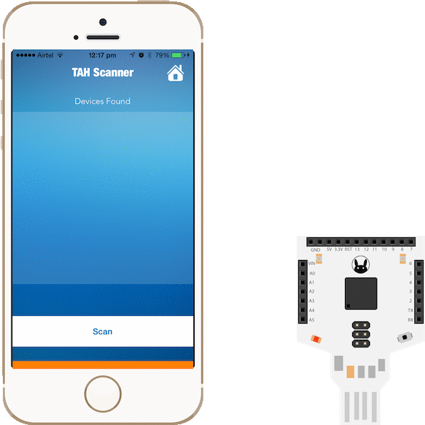

Getting started with Tah
Now let's get started with using the TAH.Things that you will require :
- Tah
- Android or iOS device
Step 1: Power up the Tah
Connect the Tah to any USB port. It can be on your PC, laptop or Mac.
You can also connect the Tah to a USB wall adapter, like the one you use
with your smartphone.
Make sure that the red LED is always on and the blue LED is blinking.

Step 3: Connect to the Tah
Scan for BLE devices using the Tah app and connect
to the device named Tah
Step 4: Control LED
We have a green LED connected to pin 13. Toggle the state of pin 13 to turn on/off the green the LED.
